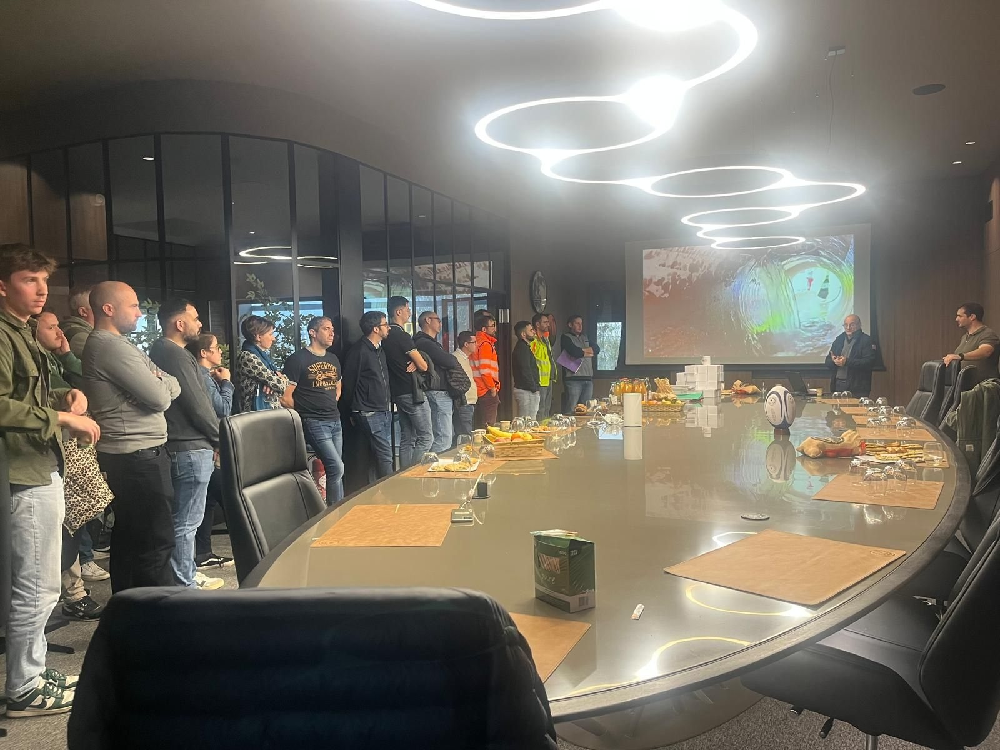
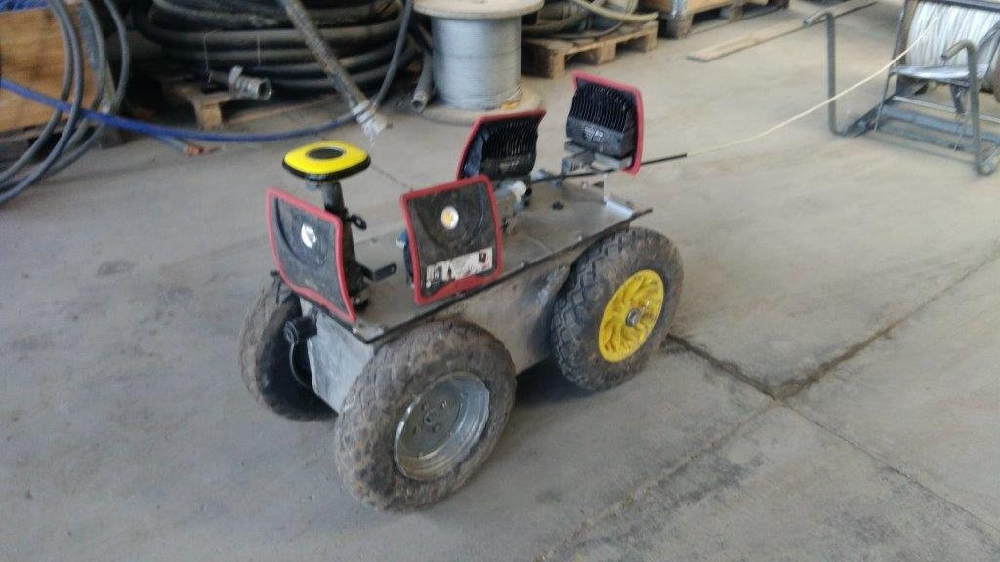
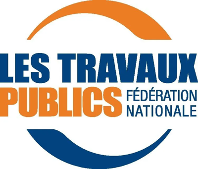
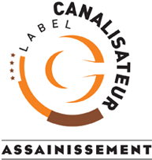
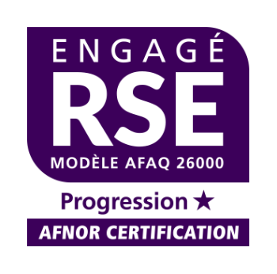
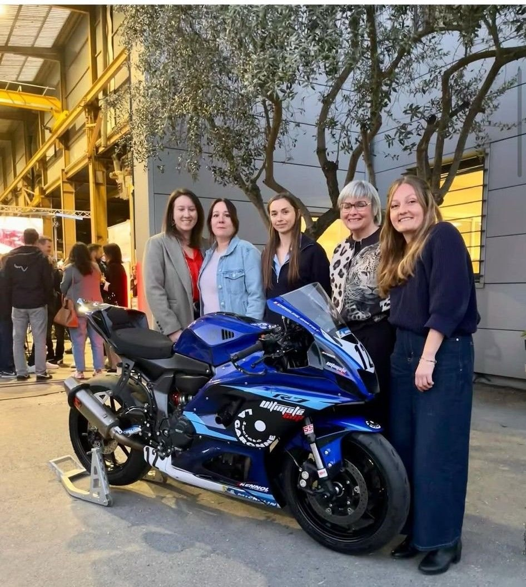

L'entreprise
Une entreprise familiale toulousaine, depuis 1956.
Trois générations de la famille Pascual, près de 70 ans de chantiers sur l'agglomération toulousaine, 35 collaborateurs et une conviction : les réseaux d'eau méritent des spécialistes.
Qui nous sommes
Le métier de l'eau, et rien d'autre.
SA LA GARONNE est une PME familiale de travaux publics fondée à Toulouse le 13 janvier 1956 par Eloy Pascual. Michel Pascual lui succède en 1987, puis Nicolas Pascual en 2017 : trois générations à la tête d'une entreprise concentrée, depuis l'origine, sur un seul domaine — les réseaux d'eau et d'assainissement.
Cette spécialisation nous a permis de développer une expertise reconnue sur les chantiers urbains les plus contraints, d'investir tôt dans la réhabilitation sans tranchée et de concevoir nos propres outils, comme le RIC, robot d'inspection breveté en 2018.
Aujourd'hui, 35 collaborateurs répartis en quatre équipes de chantier, un atelier et un bureau d'études portent cette exigence au quotidien, pour les collectivités, les exploitants et les acteurs du cycle de l'eau. L'activité se répartit entre assainissement (75 %), eau potable (15 %) et réhabilitation sans tranchée (10 %).
Repères
70 ans d'histoire, une trajectoire cohérente.
Eloy Pascual crée La Garonne
La société est constituée à Toulouse le 13 janvier 1956, sous forme de SARL, pour répondre aux besoins de la ville en réseaux d'eau et d'assainissement.
Michel Pascual prend la direction
Le fils du fondateur reprend l'entreprise et consolide son ancrage sur l'agglomération toulousaine : chantiers urbains, grande profondeur, grand diamètre.
Nicolas Pascual succède à son père
Troisième génération à la tête de l'entreprise familiale. Cette longévité nourrit une relation de confiance avec les acteurs de l'eau du secteur toulousain.
Le RIC, robot d'inspection breveté
La Garonne développe et brevète le RIC, robot de télé-visualisation des ouvrages d'assainissement en 4K et à 360°. Plus de 120 km de réseaux inspectés depuis sur la commune de Toulouse.
Certification RSE, puis label Engagé RSE d'AFNOR
Portée par la responsable QHSE, la démarche RSE est certifiée en juin 2022 et labellisée Engagé RSE par AFNOR en mai 2023. Un comité RSE fixe et évalue des objectifs chaque année.
Une marque technique, fiable et en mouvement
35 collaborateurs, quatre équipes de chantier, un atelier, un bureau d'études intégré et une identité renouvelée : l'entreprise aborde ses 70 ans en référence des réseaux d'eau sur son territoire.
Ingénierie intégrée
Un bureau d'études dans l'entreprise.
Géomètre-dessinateur et chargé d'études travaillent en interne, de la réponse aux appels d'offres jusqu'au récolement. Une plus-value rare pour une entreprise de 35 personnes.
Bureau d'études
Étudier, lever, dessiner, contrôler.
- Études de prix et mémoires techniquesUne réponse précise aux consultations : variantes, phasages et méthodes argumentés.
- Levés hebdomadaires des travauxUn géomètre-dessinateur pour quatre équipes de chantier : les ouvrages réalisés sont levés chaque semaine.
- Plans d'exécution et de récolementUne réactivité réelle dans la production des plans, pour le chantier comme pour l'exploitant.
- Appui technique aux équipesLe chargé d'études suit le chantier, anticipe les points durs et sécurise les choix d'exécution.
Innovation · brevet 2018
RIC, le robot d'inspection conçu par La Garonne.
Robot de télé-visualisation des ouvrages d'assainissement en 4K et à 360°, développé et breveté par l'entreprise. Plus de 120 km de réseaux inspectés sur la commune de Toulouse.

Qualifications & labels
Identifications professionnelles FNTP, labels métier et engagements certifiés.



Valeurs
Ce qui guide nos équipes.
Six principes, hérités de 70 ans de terrain, appliqués à chaque intervention.
Des compétences pointues sur les réseaux, les matériaux, les procédés et les contraintes du sous-sol urbain.
Près de 70 ans de chantiers sur le même territoire : nous connaissons les réseaux, souvent depuis leur construction.
Une responsable QHSE dédiée, des formations AIPR, CATEC, SST et H0B0, des EPI contrôlés : la sécurité des équipes et des riverains est la première condition de tout chantier.
Des engagements tenus sur les délais, la qualité d'exécution et la continuité de service.
Techniques sans tranchée, phasage, emprises réduites : nous respectons la vie du quartier pendant les travaux.
Démarche RSE labellisée, tri et réemploi des déblais, test de chantiers bas carbone : des infrastructures et des pratiques conçues pour durer.
Démarche RSE
Certifiée en 2022, labellisée Engagé RSE par AFNOR en 2023. Objectifs 2026 :

Équipe & moyens
35 collaborateurs, quatre équipes, un bureau d'études.
Chefs de chantier, canalisateurs, conducteurs d'engins, opérateurs de réhabilitation, encadrement technique : une équipe stable, formée et attachée à son métier.
- Quatre équipes de chantierDes équipes qualifiées et fidèles, une transmission du savoir-faire entre générations de canalisateurs et de chefs de chantier.
- Un bureau d'études intégréGéomètre-dessinateur et chargé d'études : levés hebdomadaires, plans d'exécution et de récolement, études de prix.
- Un atelier et un parc matériel adaptésEngins de terrassement, unités d'hydrocurage et d'inspection, robot RIC, matériel de réhabilitation robotisée, pompage.
- Une culture sécuritéFormations régulières, EPI systématiques, plans de prévention et analyse des risques sur chaque chantier.
- Un siège à Toulouse63 chemin de Guilhermy : bureaux, atelier et parc matériel au cœur de notre zone d'intervention.
Nous rejoindre
Un métier utile, des chantiers qui comptent.
Canalisateur, chef de chantier, conducteur d'engins, opérateur de réhabilitation : nous recrutons régulièrement des profils de terrain, débutants comme expérimentés.
Envoyer une candidatureFiche d'identité
Contact
Un réseau à construire, entretenir ou réhabiliter ?
Parlons de votre projet. Nos équipes vous répondent avec précision, sur la base de 70 ans de chantiers.